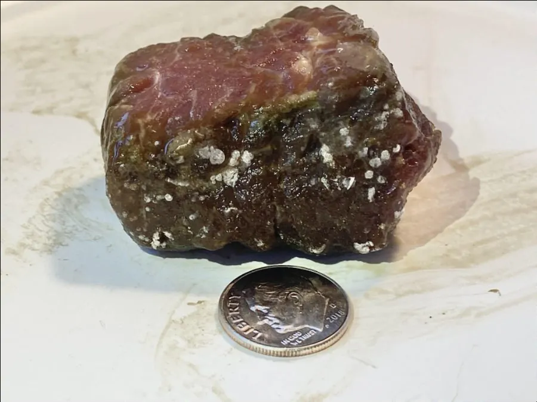

真菌 · 真菌界
解脂耶氏酵母 Yarrowia lipolytica

能分解油脂和烷烃的非常规酵母，在食品、饲料和环境治理中应用广泛，也是合成生物学的重要底盘细胞。
- 分类
- 门子囊菌门纲半子囊菌纲目酵母目科酵母科属耶氏酵母属
- 栖息环境
- 乳制品、肉类、含油废水和石油污染环境，也用于工业发酵
- 地理分布
- 全球分布，常见于含脂食品与工业发酵体系
- 保护级别
- 暂无评估（工业与科研用酵母，非保护对象）
物种志
解脂耶氏酵母是子囊菌门酵母目的非常规酵母，细胞呈椭圆形，可形成假菌丝。它最突出的特点是能分泌多种脂肪酶和蛋白酶，分解油脂、烷烃和蛋白质，因此能在含油废水、石油污染等特殊环境中生长。在培养基上菌落呈白色至乳白色，表面皱褶。
解脂耶氏酵母广泛存在于乳制品、肉类和含油环境中，在食品工业中用于生产柠檬酸、脂肪酶和单细胞蛋白，在环境治理中可用于处理含油废水和石油污染。近年来，它成为合成生物学的重要底盘细胞，被改造用于生产油脂、有机酸和萜类等化合物。该酵母安全性较好，被美国食品药品监督管理局列为安全菌株之一，但工业使用仍需规范管理。
形态与习性
- 分类子囊菌门酵母目酵母科耶氏酵母属
- 特点能分泌脂肪酶和蛋白酶，分解油脂与烷烃
- 菌落白色至乳白色，表面皱褶
- 应用生产柠檬酸、脂肪酶和单细胞蛋白
- 环境用途处理含油废水和石油污染
- 科研价值合成生物学的重要底盘细胞
趣味知识
- 解脂耶氏酵母能分解油脂和烷烃，常出现在含油废水和乳制品中。
- 它在食品工业中用于生产柠檬酸、脂肪酶和单细胞蛋白。
- 近年来它成为合成生物学的重要底盘细胞，可被改造生产多种化合物。